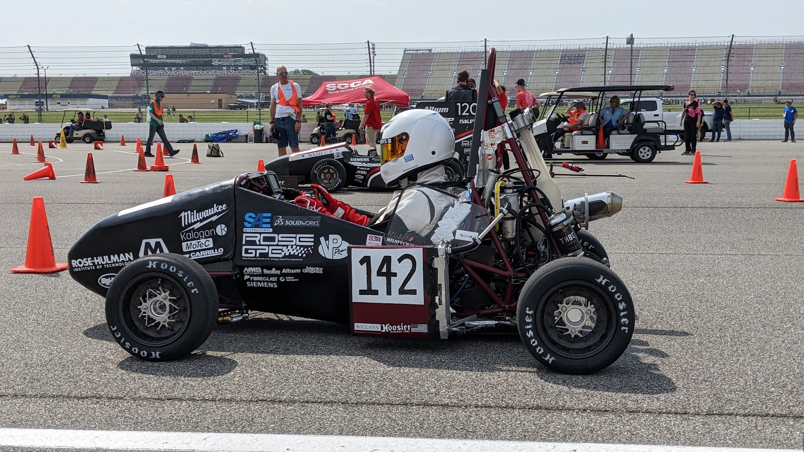
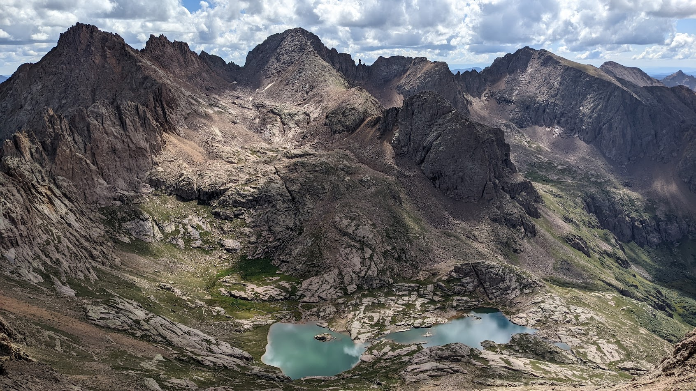

Long Version
I graduated in May 2025 from Rose-Hulman Institute of Technology with a degree in software engineering, mathematics, and computer science. I like pretty much all aspects of software engineering, from eliciting software requirements from clients, to designing software based on functional and nonfunctional requirements, to quality assurance, to debugging, to writing documentation.
I am always trying to learn and improve and enjoy looking for ways to apply what I have learned in courses and outside of courses to new problems or other things I do.
Additionally, I am a cyclist, an outdoor adventurer, a musician, and a stage technician, and in high school and college, I was always busy with extracurriculars, teaching me skills that I have both unintentionally and intentionally applied to software engineering. A few of those applications are described below.
Applying Skills to Software Engineering
- Challenging Myself
- Learning Quickly
- Constantly Exploring
- Working Efficiently and Finding Balance
- Continuously Improving
- Anticipating What is Next
Challenging Myself

I started riding the Courage Classic bike ride (current route is 145 miles over two days) with my family when I was eight, and each year I try to create a more difficult variation of the route to complete.
Whenever I finish a difficult hike or bike ride, I immediately start looking for one that is a little harder to attempt next, and if I find a route that sounds difficult, I am often intrigued by it and start planning ways to complete it. That has taught me to challenge myself and persevere.
At Rose-Hulman, my favorite software engineering projects were often complex and did not have an obvious solution (like ROCKO, Linter, Bone App(etit), and Debugging Open Source Software). I usually had to try many ideas to complete parts of the project, and I enjoyed the process of working towards a solution. I also learned to carefully read through documentation to understand the systems I am working with and solutions to similar problems, and I can easily focus on debugging difficult problems.
Learning Quickly
In college, I was involved in extracurriculars that I did not have a lot of experience in, such as Formula SAE and stage crew for the drama club and performing arts auditorium.
On the Formula SAE team my freshman year, I completed many small mechanical engineering projects that required learning CAD, and the team manager recommended that I be a sub-team lead for the next year.
I was the suspension sub-team lead for the next two years, where I spent a lot of the summer and school year learning mechanical engineering concepts, like in statics and finite element analysis.

I started doing stage work my senior year, and my only previous experience had been setting up chairs and stands for a summer music festival. At the beginning of the school year, I did not know that the standard outlets in the United States are called Edison outlets. But by the end of the school year, I had set up for touring performing arts ensembles and helped mic the drama club's pit orchestra.
Those skills have been valuable in software engineering by letting me understand large code bases quickly and learn new languages and frameworks, like during my internship at DEKA, where I learned Go and then developed a Go library and started a Go component. It was especially useful in my group's capstone project when learning controls and understanding how to incorporate ROS2.
Constantly Exploring

Living in Colorado, I can easily go hiking and backpacking, letting me explore mountains and areas away from roads. I often look at maps and peaks I can see from the area I am visiting, giving me ideas for where I might want to explore next. Usually, the more difficult and remote places are more appealing to me. That led to me being curious and always trying to learn new things. At Rose-Hulman, I often overloaded on courses and sat in on courses for fun.
In software engineering, I often research many possible solutions, letting me find one that is optimal and also exposing me to concepts that I may be able to use in the future. Also, finding a solution that works is not as important to me as understanding why that solution works. Then, I know the limitations of that solution and can apply parts of that solution to other problems. Furthermore, if I come across a new software engineering topic in my free time, I usually try to learn a little about it. Recently, I researched good languages to read data from and write data to files for a dog walk scheduling project and then wrote some Perl scripts.
Working Efficiently and Finding Balance
I have always been involved in many extracurriculars and taken as many courses as possible, often overloading. That has taught me to work efficiently to have enough time to focus on extracurriculars while also learning and completing assignments on time.
Constantly being busy before and after school helped me use my time between classes efficiently. I learned to get homework done between classes or whenever I had a break during the day.
It is important for me to balance software engineering with spending time outside and doing stage work. I enjoy the problem solving and learning aspects of software engineering, and being in the mountains or moving heavy objects around stage complements software engineering well.